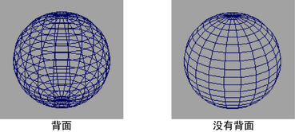
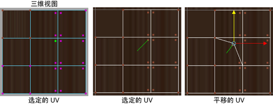
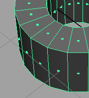
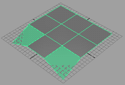

使用子菜单上的选项可控制哪些特征显示在场景中的选定多边形上，包括结构元素和注释。
- 背面消隐(Backface Culling)
- 在 3D 视图的线框模式中，仅绘制面向摄影机的对象。在某些系统上可以通过启用“背面消隐”(Backface Culling)来改善性能。
- 禁用(Off)
-
默认情况下 Maya 禁用背面消隐。显示所有的线框。
- 启用(On)
-
在法线背离摄影机的区域曲面不可见。

- 消隐选项(Culling Options)
- 选择下列消隐选项之一。
- 保持线框(Keep wire)
-
显示线框轮廓。
- 保持硬边(Keep hard edges)
-
仅为软边设置背面消隐。
- 保持顶点(Keep vertices)
-
显示顶点。
- 顶点(Vertices)
-
显示选定的多边形上的顶点。
- 顶点大小(Vertex Size)
-
调整在场景视图中绘制的顶点的大小。默认大小是 3。范围是 0.2 到 10。
- UV
-
在选定的多边形上显示 UV 纹理坐标 (UV)。
- 未共享 UV(Unshared UVs)
-
在对象上显示 UV 纹理坐标 (UV)。
如果 UV 为共享，显示为单个紫色的点。
如果 UV 不共享，在给定的 UV 所属顶点附近显示多个紫色点。当在“UV 纹理编辑器”(UV Texture Editor)中选择 UV，将显示一条指向其所属面的线。
启用“未共享 UV”(Unshared UVs)选项以显示和选择未共享 UV。
 - UV 大小(UV Size)
-
调整 UV 纹理坐标 (UV) 在场景视图和“UV 纹理编辑器”(UV Texture Editor)中绘制的大小。默认大小是 4。范围是 0.2 到 10。
- 组件 ID(Component IDs)
-
根据选择的组件类型在对象的顶点（红色）、边（橙色）、面（红色）或 UV（绿色）上显示索引号。UV 的索引号仅出现在“UV 纹理编辑器”(UV Texture Editor)中。注： 您可以在颜色设置(Color Settings)中更改每个组件类型的颜色。
- 面法线(Face Normals)
-
显示多边形每个面的垂线（法线）。
- 顶点法线(Vertex Normals)
-
显示多边形每个顶点的垂线（法线）。顶点法线仅在选定对象上显示。
- 切线(Tangents)
-
在网格上显示表明切线和次法线方向的线。Binormal 显示为蓝色。切线法线显示为红色。
- 法线大小(Normals Size)
-
通过输入值或使用滑块指定大小来调整法线的长度。滑块的范围可展开，您可将法线大小设置为介于 0.02 到 10000 之间的任意一值。
- 标准边(Standard Edges)
-
在默认设置中显示所有边。
- 软/硬边(Soft/Hard Edges)
-
将软边显示为虚线，将硬边显示为线框。
- 硬边(颜色)(Hard Edges (Color))
-
将硬边显示为彩色线，将软边显示为线框。请参见以自定义颜色显示硬边。
- 硬边(Hard Edges)
-
将硬边显示为彩色线。软边仍可以亮显和选择，但是在网格上不显示。
- 边界边(Border Edges)
-
亮显所有边界边（仅在“纹理编辑器”(Texture Editor)中）。
- 折痕边(Crease Edges)
-
启用或禁用多边形上的折痕边。
- 纹理边界边(Texture Border Edges)
-
启用或禁用纹理边界边。
- 边宽度(Edge Width)
-
通过输入数值或使用滑块在 0.02 到 10 之间选择来调整边宽度。
- 面中心(Face Centers)
-
显示一个小正方形以指示面中心。
 - 面三角形(Face Triangles)
-
将所有多边形面显示为三角形。

- 非平面面(Non-planar Faces)
-
亮显所有非平面面。
 - 重置显示(Reset Display)
-
还原默认设置。
- 限于选定对象(Limit to Selected)
-
将所做的修改限制应用于选定的多边形。若要将显示更改应用于所有多边形，请禁用该选项。
元数据(Metadata)
通过启用/禁用“显示 > 多边形 > 元数据 > 可视化元数据”(Display > Polygons > Metadata > Visualize Metadata)，启用或禁用元数据的可视化。Maya 将基于您在“元数据可视化选项”(Metadata Visualization Options)窗口中选择的选项显示元数据。
若要打开“元数据可视化选项”(Metadata Visualization Options)窗口，请选择“显示 > 多边形 > 元数据” > 可视化元数据”(Display > Polygons > Metadata > Visualize Metadata) >  。
。
有关可视化元数据的详细信息，请参见在 Viewport 2.0 中可视化元数据。有关在“元数据可视化选项”(Metadata Visualization Options)窗口中提供的选项的详细信息，请参见元数据可视化选项(Metadata Visualization Options)窗口。
自定义多边形显示(Custom Polygon Display)
使用“自定义多边形显示”(Custom Polygon Display)窗口可以设置多边形的特定组件的显示方式。该对话框提供了一种可以设置多个选项的方法，也可以在“显示 > 多边形”(Display > Polygons)菜单进行，且与 Maya 的先前版本兼容。
- 受影响的对象(Objects affected)
-
确定受在该窗口应用的设置影响的对象。
- 顶点(Vertices)
-
可以显示多边形上的顶点和顶点法线。
分别与“显示 > 多边形 > 顶点”(Display > Polygons > Vertices)和“显示 > 多边形 > 顶点法线”(Display > Polygons > Vertex Normals)选项有相同效果。
- 亮显(Highlight)
-
与“显示 > 多边形 > 折痕顶点”(Display > Polygons > Crease Vertices)有相同效果。
- 顶点大小(Vertex Size)
-
与“显示 > 多边形 > 顶点大小”Display > Polygons > Vertex Size有相同效果。
- 边(Edges)
-
允许自定义边硬度的显示。
与“显示 > 多边形 > 标准边”(Display > Polygons > Standard Edges)、“显示多边形 > 软边/硬边”(Display Polygons > Soft/Hard Edges)和“显示 > 多边形 > 硬边”(Display > Polygons > Hard Edges)有相同效果。
- 亮显(Highlight)
-
允许亮显边界边、纹理边和折痕边。
分别于“显示 > 多边形 > 边界边”(Display > Polygons > Border Edges)、“显示 > 多边形 > 折痕边”(Display > Polygons > Crease Edges)和“显示 > 多边形纹理边界边”(Display > Polygons Texture Border Edges)有相同效果。
- 边宽(Edge width)
-
与“显示 > 多边形 > 边宽度”(Display > Polygons > Edge Width)有相同效果。
- 面(Face)
-
可以显示面中心、面法线和非平面面。
分别与“显示 > 多边形 > 面中心”(Display > Polygons > Face Centers)、“显示 > 多边形 > 面三角形”(Display > Polygons > Face Triangles)和“显示 > 多边形 > 非平面面”(Display > Polygons > Non-planar Faces)有相同效果。
- 显示项目编号(Show item numbers)
-
允许显示每个顶点、边、面和 UV 的 ID。
与在“显示 > 多边形 > 组件 ID”(Display > Polygons > Component IDs)中的选项有相同效果。
- 法线大小(Normals size)
-
当显示法线时调整法线的长度。
与“显示 > 多边形 > 法线大小”(Display > Polygons > Normals Size)有相同效果。
- UV 大小(UV Size)
-
调整 UV 的大小。
与“显示 > 多边形 > UV 大小”Display > Polygons > UV Size有相同效果。
- 纹理坐标(Texture coordinates)
-
可以在任何时候单独显示 UV 或作为对象上的拓扑显示。
和“显示 > 多边形 > UV”Display > Polygons > UVs 和“显示 > 多边形 > 未共享 UV”(Display > Polygons > Unshared UVs)有相同效果。
- 颜色操作(Color operations)
-
当“在着色显示下上色”(Color in Shaded Display)处于启用状态时，可以观看“应用颜色”(Apply Color)、“预照明”(Prelighting)和“绘制顶点颜色工具”(Paint Vertex Color Tool)在着色模式下的效果。只要选择这些命令，此选项在默认情况下处于启用状态。选择“对材质通道上色”(Color Material Channel)以细化您的应用程序。请参见使用逐顶点颜色数据为多边形上色。
- 通道(Channels)
-
在对象曲面上仅显示特定颜色通道。
- 以灰度显示颜色(Display color as greyscale)
-
以灰度显示对象上的选定颜色通道。
- 以灰度显示 Alpha(Display alpha as greyscale)
-
在对象上仅显示以灰度而不是透明度呈现的 Alpha 通道。
- 背面消隐(Backface culling)
-
与“显示 > 多边形 > 背面消隐”(Display > Polygons > Backface Culling)效果相同。
平滑网格预览(Smooth Mesh Preview)
允许快速观看进行平滑后网格的样子。
与在键盘上按下 2 键的效果相同。
- 显示(Display)
-
允许同时显示原始网格（作为框架）和平滑网格，或仅显示平滑网格。
- 编辑(Edit)
-
允许选择编辑原始版本、平滑版本或同时编辑网格的两个版本。
只有当“显示”(Display)设置为“框架 + 平滑网格”(Cage + Smooth Mesh)时才可用。
- 分段级别(Division Levels)
-
确定显示在场景面板中的并发平滑操作数目。
附加控制(Extra controls)
“平滑网格预览”(Smooth Mesh Preview)有许多附加选项。有关这些控制的详细信息，请参见平滑选项(Smooth Options)。